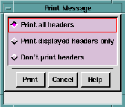
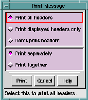
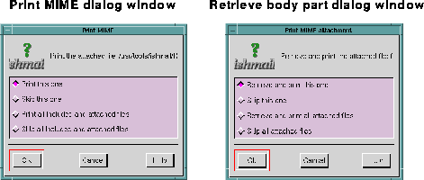

The procedure for printing a message or messages containing MIME-encoded inclusions or attachments is described below. As you perform the print procedure, you can click the Cancel button at any time to cancel the operation, or click the Help button to get more information.
Click the Print command to print messages either from the Reading window or from the Main window. Inclusions and attachments are printed separately from the original mail message.
Ishmail has built-in support for printing the following file types:
In order for Ishmail to print included or attached files containing other MIME-encoded content types, such as GIF, JPEG, ODA, and so forth, you must supply an external print application command for each type and specify it in your mailcap file or $HOME/.mailcap file.
Before issuing a print command for any inclusion or attachment, Ishmail checks the mailcap file to see if a print command is specified. If the command is found, Ishmail displays the name of the file in a Print MIME dialog window along with selection prompts that enable you to print the file or to skip it.
Follow this procedure to print messages containing inclusions or attachments:



As you make your print selection(s), the name of each printable inclusion or attachment is displayed, in turn, at the top of the dialog window.
mailcap file.
The dialog window will then display, in turn, the names of the each of the next included or attached files. As each name is displayed, you can choose to print it or skip it.
An error message is displayed if an inclusion or attachment can't be retrieved.
Ishmail indicates the printing order of these files by inserting a note similar to the following in the printed output of the original mail message. The note is inserted at the location of the icon that represented the inclusion or attachment.
(Attached Text File: /pub/GIF/README)
(Printed separately)
If an inclusion or attachment can't be printed because the appropriate print software is not available, a message similar to the following is added to the printed output at the location of the icon that represented the inclusion or attachment:
(Attached GIF Image: /pub/GIF/shuttle.gif)
(Not printable)
If an inclusion or attachment is not printed because you elected to "skip" it, a message similar to the following is added to the printed output at the location of the icon that represented the inclusion or attachment:
(Attached GIF Image: /pub/GIF/shuttle.gif)
(Not printed)
For a more detailed discussion of MIME-encoded messages, see Internet RFC 1521 and Internet RFC 1341 (Multipurpose Internet Mail Extension), September 1993, and June 1992, respectively, by N. Borenstein, and N. Freed.
For information about sending MIME-encoded attachments or inclusions with your messages, see Include Option in the Composition Window chapter.